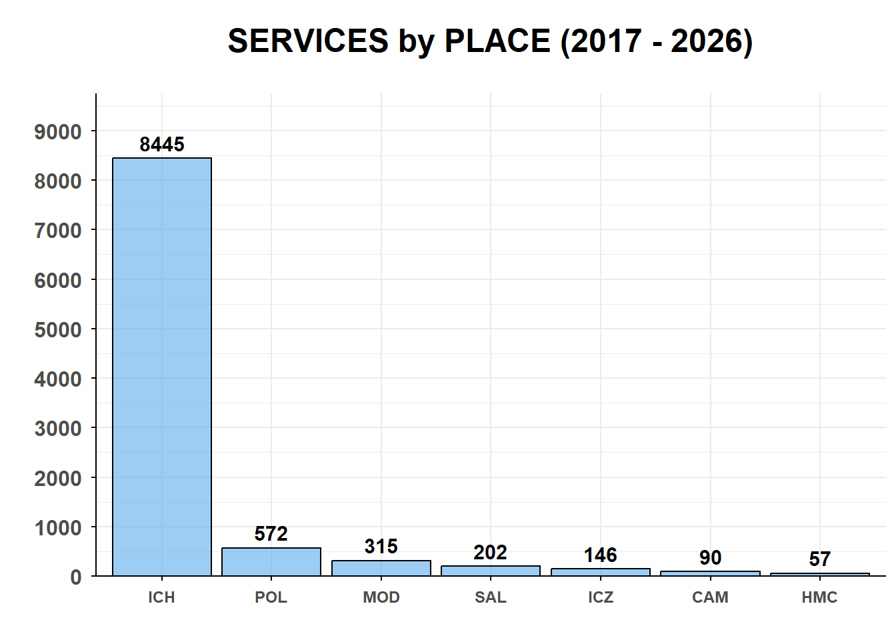
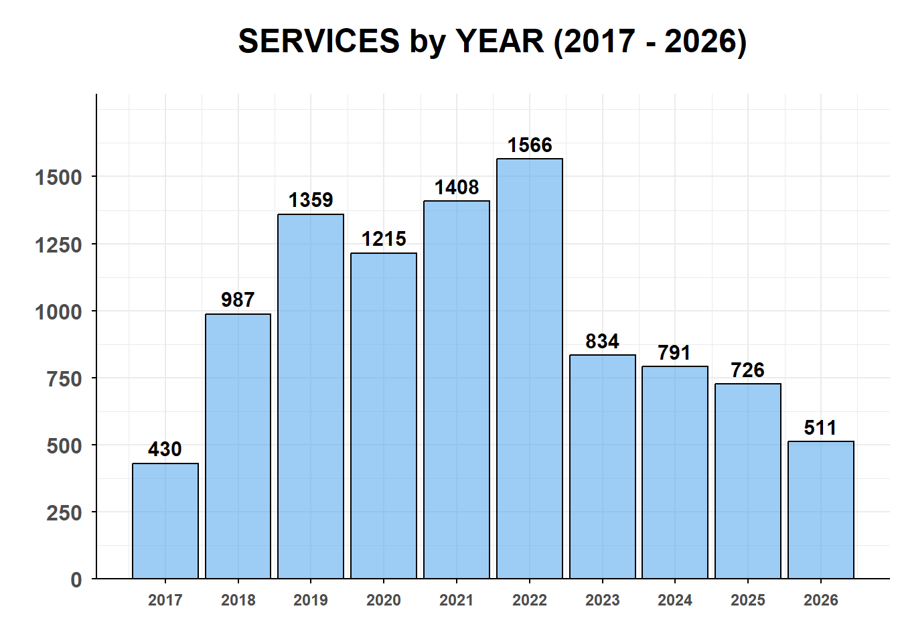
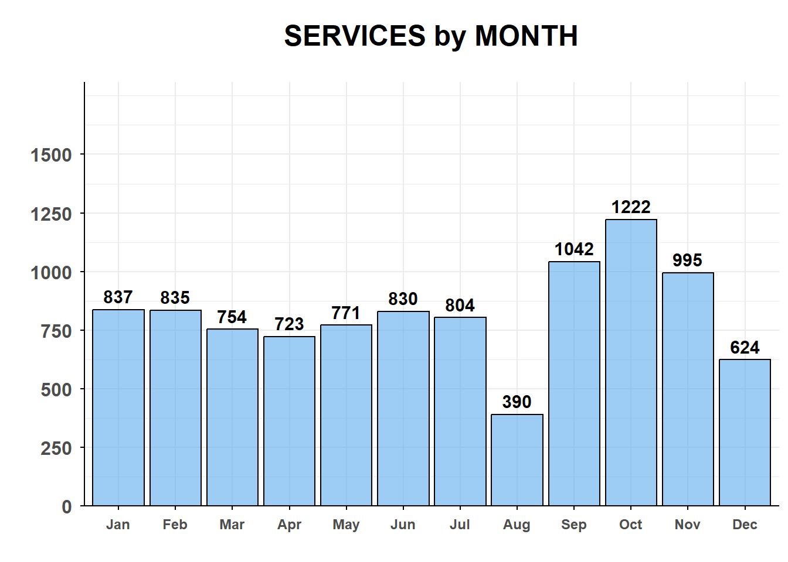
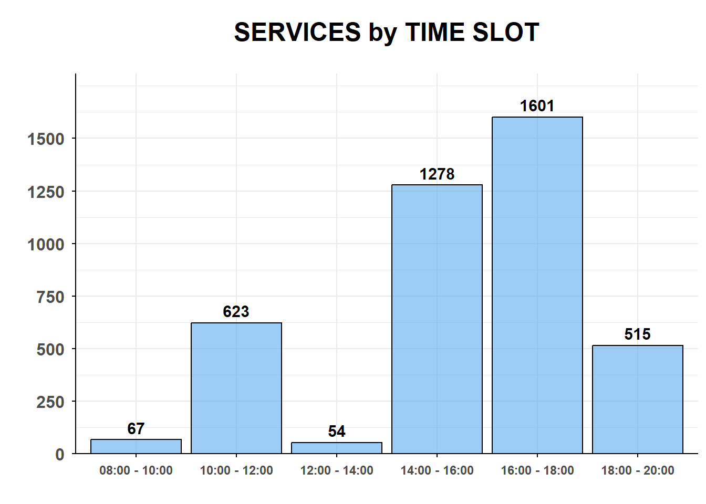
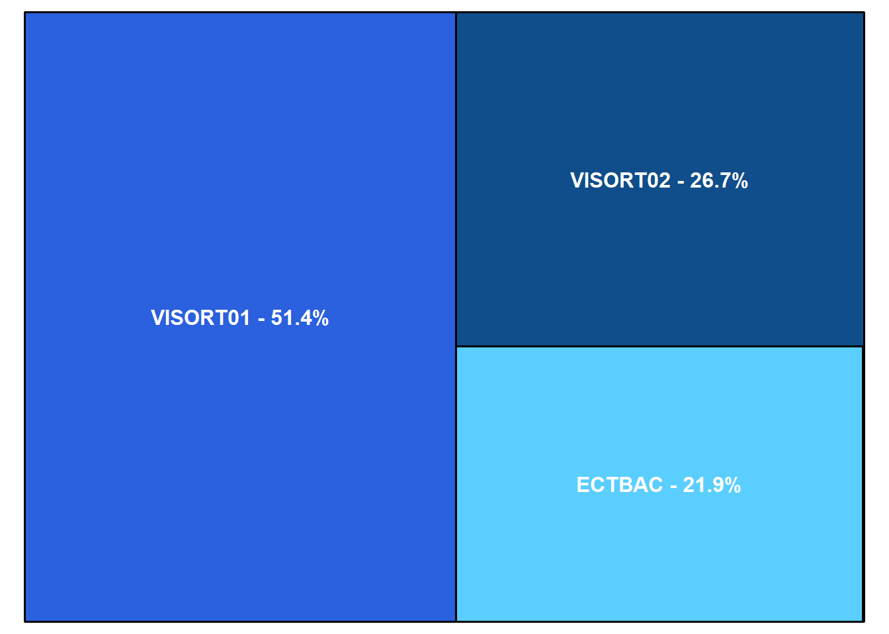
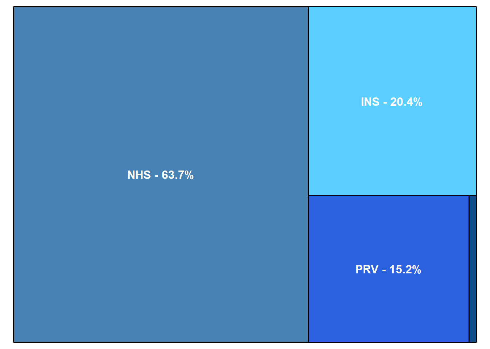
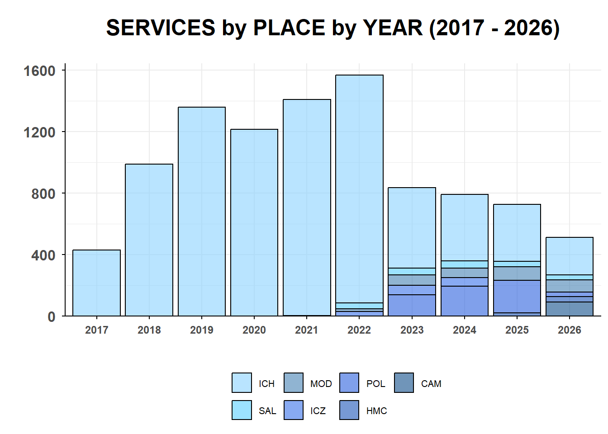
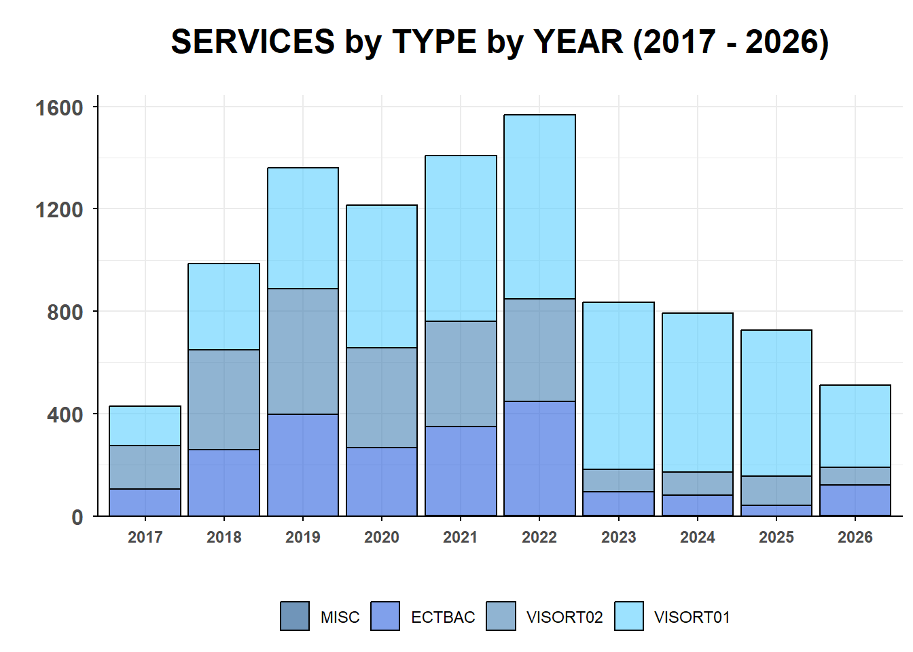

| Place | Start | End | Span | Patients | Patients (running) | Patients/year |
|---|---|---|---|---|---|---|
| ICH | 12-07-2017 | 22-10-2026 | 9y 3m 10d | 8445 | 8445 | 910 |
| SAL | 24-11-2021 | 05-10-2026 | 4y 10m 11d | 202 | 8647 | 41 |
| MOD | 07-09-2022 | 23-10-2026 | 4y 1m 16d | 315 | 8962 | 76 |
| ICZ | 23-09-2022 | 20-12-2024 | 2y 2m 27d | 146 | 9108 | 65 |
| POL | 18-01-2023 | 25-02-2026 | 3y 1m 7d | 572 | 9680 | 184 |
| HMC | 03-03-2025 | 28-09-2026 | 1y 6m 25d | 57 | 9737 | 36 |
| CAM | 08-04-2026 | 21-10-2026 | 6m 13d | 90 | 9827 | 0 |
- PERSONAL CLINICAL ACTIVITY ANALYSIS -
1 📈 SERVICES by PLACE
📌 The figure below provides a comparative overview of the total number of healthcare services rendered across all operational locations1

2 📈 SERVICES by YEAR
📌 The following chart presents the total volume of surgeries and procedures performed by year, illustrating the annual trends and workload distribution over time
| Year | Patients | Patients (running) |
|---|---|---|
| 2017 | 430 | 430 |
| 2018 | 987 | 1417 |
| 2019 | 1359 | 2776 |
| 2020 | 1215 | 3991 |
| 2021 | 1408 | 5399 |
| 2022 | 1566 | 6965 |
| 2023 | 834 | 7799 |
| 2024 | 791 | 8590 |
| 2025 | 726 | 9316 |
| 2026 | 511 | 9827 |

3 📈 SERVICES by MONTH
📌 The following chart presents the total volume of surgeries and procedures byformed monthly, illustrating the annual trends and workload distribution over the whole year
| Month | Patients | % | % (running) |
|---|---|---|---|
| Jan | 837 | 8.52% | 8.52% |
| Feb | 835 | 8.50% | 17.01% |
| Mar | 754 | 7.67% | 24.69% |
| Apr | 723 | 7.36% | 32.04% |
| May | 771 | 7.85% | 39.89% |
| Jun | 830 | 8.45% | 48.34% |
| Jul | 804 | 8.18% | 56.52% |
| Aug | 390 | 3.97% | 60.49% |
| Sep | 1042 | 10.60% | 71.09% |
| Oct | 1222 | 12.44% | 83.52% |
| Nov | 995 | 10.13% | 93.65% |
| Dec | 624 | 6.35% | 100.00% |

4 📈 SERVICES by TIME SLOT
📌 The following chart displays the distribution of procedures across daily time slots (from 8:00 AM - 08:00 PM), highlighting the occupancy level for each time slot
| Slot | Patients | % | % (running) | % occupancy |
|---|---|---|---|---|
| 08:00 - 10:00 | 67 | 1.62% | 1.62% | 34.90% |
| 10:00 - 12:00 | 623 | 15.06% | 16.67% | 62.93% |
| 12:00 - 14:00 | 54 | 1.30% | 17.98% | 28.12% |
| 14:00 - 16:00 | 1278 | 30.88% | 48.86% | 53.52% |
| 16:00 - 18:00 | 1601 | 38.69% | 87.55% | 57.26% |
| 18:00 - 20:00 | 515 | 12.45% | 100.00% | 24.88% |

5 📈 SERVICES PROVIDED
📌 This chart details the breakdown of clinical activity by service type, highlighting the volume distribution between initial consultations, follow-up visits, and specialized procedures2
| Service | Patients | % | % (running) |
|---|---|---|---|
| VISORT01 | 5049 | 51.38% | 51.38% |
| VISORT02 | 2620 | 26.66% | 78.04% |
| ECTBAC | 2152 | 21.90% | 99.94% |
| MISC | 6 | 0.06% | 100.00% |

6 📈 SERVICES by SYSTEM
📌 This chart details the proportion of clinical activity according to the practice regime3
| System | Patients | % | % (running) |
|---|---|---|---|
| INS | 2008 | 20.43% | 84.12% |
| NHS | 6258 | 63.68% | 63.68% |
| PRV | 1495 | 15.21% | 99.33% |
| TBD | 66 | 0.67% | 100.00% |

7 📈 SERVICES by PLACE by YEAR
📌 The figure below illustrates the distribution and evolution of healthcare services rendered across operational locations broken down by year, highlighting annual volume trends by facility
| Year | ICH | SAL | MOD | ICZ | POL | HMC | CAM | Total |
|---|---|---|---|---|---|---|---|---|
| 2017 | 430 | 0 | 0 | 0 | 0 | 0 | 0 | 430 |
| 2018 | 987 | 0 | 0 | 0 | 0 | 0 | 0 | 987 |
| 2019 | 1359 | 0 | 0 | 0 | 0 | 0 | 0 | 1359 |
| 2020 | 1215 | 0 | 0 | 0 | 0 | 0 | 0 | 1215 |
| 2021 | 1406 | 2 | 0 | 0 | 0 | 0 | 0 | 1408 |
| 2022 | 1482 | 36 | 19 | 29 | 0 | 0 | 0 | 1566 |
| 2023 | 522 | 46 | 67 | 62 | 137 | 0 | 0 | 834 |
| 2024 | 432 | 47 | 63 | 55 | 194 | 0 | 0 | 791 |
| 2025 | 369 | 37 | 87 | 0 | 212 | 21 | 0 | 726 |
| 2026 | 243 | 34 | 79 | 0 | 29 | 36 | 90 | 511 |
| Total | 8445 | 202 | 315 | 146 | 572 | 57 | 90 | 9827 |

8 📈 SERVICES by TYPE by YEAR
📌 The following figure presents the annual evolution of clinical services classified by type and year, highlighting shifts in procedural volumes over the observation period
| Year | VISORT01 | VISORT02 | ECTBAC | MISC | Total |
|---|---|---|---|---|---|
| 2017 | 154 | 172 | 104 | 0 | 430 |
| 2018 | 338 | 391 | 258 | 0 | 987 |
| 2019 | 471 | 492 | 396 | 0 | 1359 |
| 2020 | 558 | 391 | 266 | 0 | 1215 |
| 2021 | 647 | 412 | 348 | 1 | 1408 |
| 2022 | 718 | 401 | 446 | 1 | 1566 |
| 2023 | 653 | 86 | 94 | 1 | 834 |
| 2024 | 620 | 91 | 78 | 2 | 791 |
| 2025 | 570 | 114 | 42 | 0 | 726 |
| 2026 | 320 | 70 | 120 | 1 | 511 |
| Total | 5049 | 2620 | 2152 | 6 | 9827 |

Footnotes
CAM = Humanitas Medical Care, Bergamo (Camozzi) | HMC = Humanitas Medical Care, Monza | ICH = “Istituto Clinico Humanitas” - “Humanitas Ressearch Hospital”, Rozzano (MI) | ICZ = “Istituti Clinici Zucchi”, Monza | MOD = Poliambualtorio “Modoetia”, Monza | POLI = “Fondazione IRCCS Ca’ Granda - Ospedale Maggiore Policlinico”, Milano | SAL = Private practice, Salerno↩︎
VISORT01 = Initial consultation | VISORT02 = Follow-up consultation | ECTBAC = Hip ultrasound for DDH screening | MISC = Other services (e.g. cast removal, intra-articular or botulin injection)↩︎
INS = Insured patients | NHS = National Health System | PRV = Private practice | TBD = To be defined↩︎